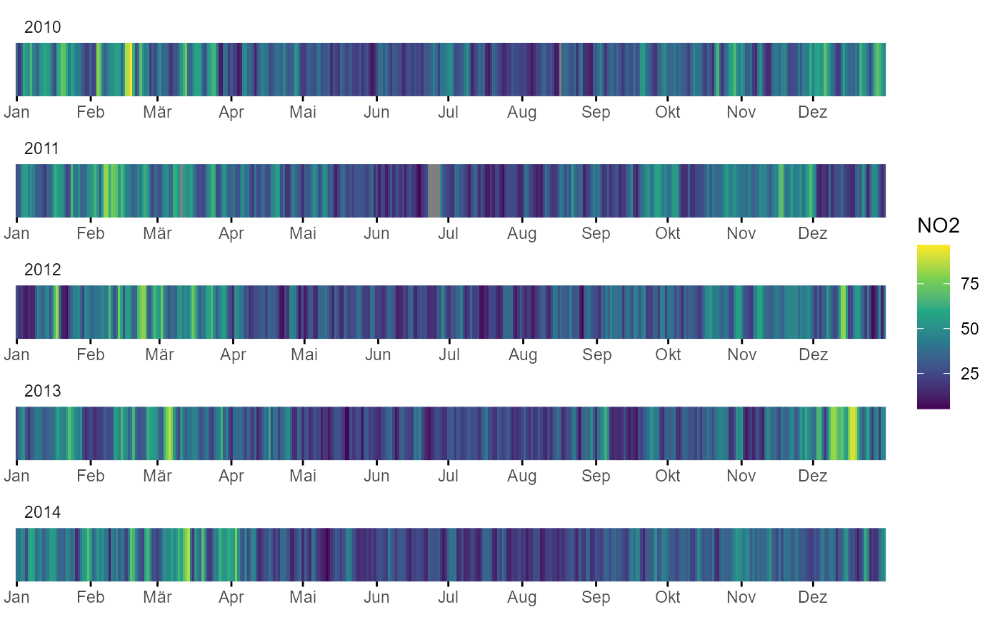

Kalender_Linie
Thomas von Allmen
2024-09-15
Source:vignettes/articles/Kalender_Linie.Rmd
Kalender_Linie.RmdKalender aus Linien
Diese Diagramm ist optimal um verschiedene Jahre miteinander zu vergleichen und Episoden innerhalb eines Jahres zu finden
library(magrittr)
library(ggplot2)
library(rOstluft)
fn <- system.file("extdata", "Zch_Stampfenbachstrasse_2010-2014.csv",
package = "rOstluft.data", mustWork = TRUE)
df <- read_airmo_csv(fn)
df <- resample(df, list("default_statistic" = "drop", "NO2" = "mean"), "d1", data_thresh = 0.8)
df <- rolf_to_openair(df)
ggplot(df, aes(y = 1, x = date, fill = NO2)) +
geom_raster() +
scale_fill_viridis_c() +
scale_y_continuous(expand = c(0,0)) +
scale_x_datetime(expand = c(0,0), date_breaks = "1 month", date_labels = "%b") +
facet_wrap(vars(lubridate::year(date)), scales = "free_x", ncol = 1) +
theme_minimal() +
theme(
panel.grid = element_blank(),
axis.text.y = element_blank(),
axis.title.y = element_blank(),
axis.ticks.y = element_blank(),
axis.ticks.x = element_line(),
axis.title.x = element_blank(),
strip.text = element_text(hjust = 0)
)